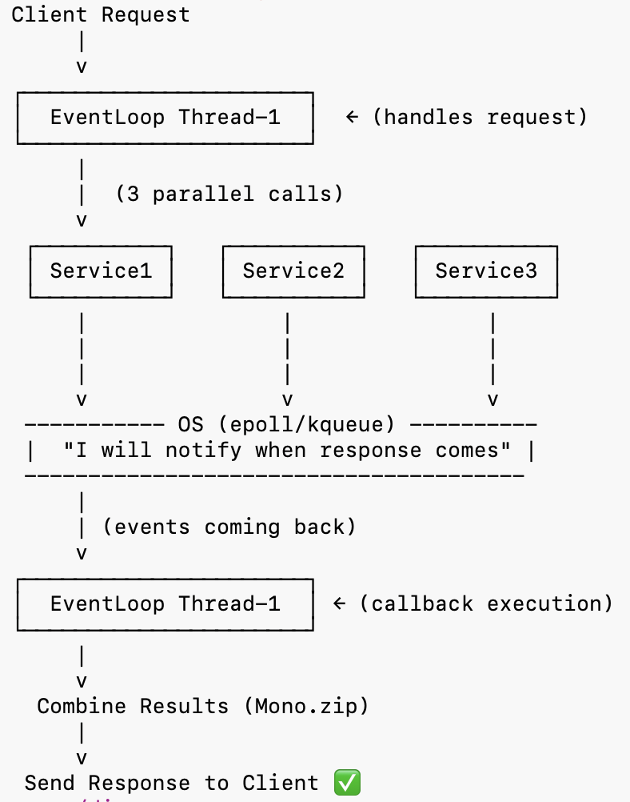

WebClient is like a helper tool in Spring Boot that helps you make HTTP requests
to other web services or APIs.
It’s non-blocking, meaning it doesn’t make your application wait for a response. This makes it faster and better for high-performance apps.
👉 Thread doesn’t wait → OS tells when response comes

EventLoop thread picks the request.
eventLoop-1 handles requestRequests are sent to all services.
Instead, it says:
"OS, please inform me when response comes"This is the magic of non-blocking programming.
eventLoop-1 → now free to handle other requestsOS continuously checks sockets using:
epoll (Linux)
kqueue (Mac)OS checks:
"Which socket got data?"Suppose Service2 sends response first.
Service2 socket → READY ✅OS sends notification to Event Loop.
eventLoop-1:
"Oh Service2 response came!"Event loop executes callback logic.
Important:
Need all responses:
service1 ✅
service2 ✅
service3 ✅When all responses complete:
Combine → Send final response to client ✅Thread is NOT continuously checking responses.
OS notifies the Event Loop whenever socket data becomes available.
This is called:
First, you need to add a piece of code to your project so that Spring Boot knows you want to use
WebClient. This is done by adding a dependency in your project’s file (like pom.xml if you're using Maven):
<dependency>
<groupId>org.springframework.boot</groupId>
<artifactId>spring-boot-starter-webflux</artifactId>
</dependency>
Next, you need to create a WebClient object that you can use in your code. In Spring Boot, we can set this up once and reuse it by creating a “bean.”
import org.springframework.context.annotation.Bean;
import org.springframework.context.annotation.Configuration;
import org.springframework.web.reactive.function.client.WebClient;
@Configuration
public class WebClientConfig {
@Bean
public WebClient webClient(WebClient.Builder builder) {
return builder.build();
}
}
Now that you’ve set it up, let’s see how you can use WebClient to send a request.
For example, if you want to get data from https://api.example.com/data, you can do it like this:
import org.springframework.stereotype.Service;
import org.springframework.web.reactive.function.client.WebClient;
import reactor.core.publisher.Mono;
@Service
public class ApiService {
private final WebClient webClient;
public ApiService(WebClient webClient) {
this.webClient = webClient;
}
public Mono<String> fetchData() {
return webClient
.get() // Making a GET request
.uri(uri, accountNumber) // The URL you want to fetch data from
.header(Header.PREFER.getKey(), prefareHeader)
.contentType(MediaType.AAPLICATION_JSON)
.retrieve() // Send the request
.onStatus(
HttpStatusCode::isError,
response -> response.bodyToMono(Account.class)
.flatMap(errorBody -> errorService.failurCause(response, errorBody.getContext(),errorMsg,log))
)
.bodyToMono(Account.class); // Get the response as a string
}
public Mono<String> postData() {
return webClient
.post() // Making a POST request
.uri(uri, accountNumber) // The URL you want to fetch data from
.header(Header.PREFER.getKey(), prefareHeader)
.contentType(MediaType.AAPLICATION_JSON)
.bodyValue(requestBody)
.retrieve() // Send the request
.onStatus(
HttpStatusCode::isError,
response -> response.bodyToMono(Account.class)
.flatMap(errorBody -> errorService.failurCause(response, errorBody.getContext(),errorMsg,log))
)
.bodyToMono(Account.class); // Get the response as a string
}
}
Because WebClient is reactive, it doesn’t immediately return the data.
Instead, it gives back something called a Mono, which is like a "promise" that data will come later.
To get the data, you can subscribe to it like this:
apiService.fetchData().subscribe(response -> {
System.out.println("Response: " + response);
});
WebClient is a new and better way to send HTTP requests in Spring Boot.